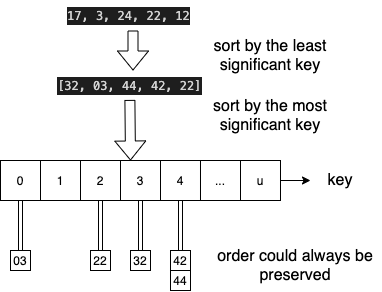

Lecture 5: Linear Sorting
Contents
Lecture 5: Linear Sorting¶
Review¶
Direct access array is fast, but may use a lot of space \(O(u)\)
Solve space problem by mapping (hashing) key space \(u\) down to \(m=O(n)\)
Hash table gives expected \(O(1)\) time operations, amoritized if dynamic
Merge Sortcan be \(O(nlogn)\), but can we have even faster sorting algorithm?
Comparison Model based Sorting - Lower Bound Analysis¶
Comparsion Sorts: the sorted order then determine is based only on comparsions between the input elements.
insertion sort
selection sort
merge sort
heap sort
quick sort
Comparison model implies that algorithm decision tree is binary (constant branching factor)
Requires
leaves L ≥# possible outputsTree height lower bounded by \(\Omega(log L)\), so worst-case running time is \(\Omega(log L)\)
To sort array of
nelements, # outputs isn!permutationsThus height lower bounded by \(log(n!) ≥ log((n/2)n/2) = \Omega(n log n)\)
So merge sort is optimal in comparison model
Can we exploit a
direct access arrayto sort faster?
Direct Access Array (DAA) Sorting¶
make DAA, suppose all keys are unique non-negative integers in range
{0, ,1, 2, ..., u-1}, so \(n<u\)store item
xin index,x.key, usingsetdata structure -> \(n*O(1)\)walk down DAA and return item seem in order -> \(O(u)\)
def direct_access_sort(A):
"Sort A assuming items have distinct non-negative keys"
u = 1 + max([x.key for x in A]) # O(n) find maximum key
D = [None] * u # O(u) direct access array
for x in A: # O(n) insert items
D[x.key] = x
i = 0
for key in range(u): # O(u) read out items in order
if D[key] is not None:
A[i] = D[key]
i += 1
# What is the type of A in Python? a list of dictionary?
what if keys are in larger range, like \(u<n^2\)?
represent each key \(k\) by tuple \((a, b)\) where \( k = a*n + b\) and \(0 \le b < n\).
one way is to use
divmodoperators as in python:Examples: [17, 3, 24, 22, 12] -> [(3,2), (0,3), (4,4), (4,2), (2,2)] -> [32, 03, 44, 42, 22] when \(n=5\)
How can we sort tuples?
Tuple Sort¶
Item keys are tuples of equal length, i.e., item
x.key = (x.k1, xk2, ...)The first key
k1is most significant.How to sort? -> sort separately each key
But in what order?
most significant to least significant, first \(k_1\) then \(k_2\): \([\bm{3}2, \bm{0}3, \bm{4}4, \bm{4}2, \bm{2}2]\) -> \([\bm{0}3, \bm{2}2, \bm{3}2, \bm{4}4, \bm{4}2]\) -> \([\bm{2}2, \bm{3}2, \bm{4}2, \bm{0}3, \bm{4}4]\) -> Too bad. The second sort totally ruined previous sort.
least significant to most significant, first \(k_2\) then \(k_1\): \([3\bm{2}, 0\bm{3}, 4\bm{4}, 4\bm{2}, 2\bm{2}]\) -> \([3\bm{2}, 4\bm{2}, 2\bm{2}, 0\bm{3}, 4\bm{4}]\) -> \([0\bm{3}, 2\bm{2}, 3\bm{2}, 4\bm{2}, 4\bm{4}]\) -> Good. But still may have problem with duplicated keys. The last two elements could be \(44, 42\) because
sortalogirhm may mess up with the order when the keys are duplicated.
Idea: use tuple sort with auxiliary DAA sort to sort tuple
(a, b).Problem! Many integers could have the same
aorbvalue, even if input keys distinctNeed sort allowing repeated keys which preserves input order
Want sort to be stable: repeated keys appear in output in same order as input
Direct access array sort cannot even sort arrays having repeated keys!
Can we modify direct access array sort to admit multiple keys in a way that is stable?
Counting Sort¶
Instead of storing a single item at each array index, store a chain, just like hashing.
For stability, chain data structure should rememebr the order in which items were added
Use a sequence data structure which maintains insertion order
To insert item \(x\),
insert_lastto end of the chain at indexx.keyThen to sort, read through all chains in sequence order, return items one by one

def counting_sort(A):
"Sort A assuming items have non-negative keys"
u = 1 + max([x.key for x in A]) # O(n) find maximum key: the key could be their own value or tuples
D = [[] for i in range(u)] # O(u) direct access array of chains
for x in A: # O(n) insert into chain at x.key: use sequence (e.g., list) to maintain insertion order
D[x.key].append(x)
i = 0
for chain in D: # O(u) read out items in order
for x in chain:
A[i] = x
i += 1
Radix Sort¶
Idea! If \(u < n^2\), use tuple sort with auxiliary counting sort to sort tuples
(a, b)Sort least significant key
b, then most significant keyaStability ensures previous sorts stay sorted
Running time for this algorithm is \(O(2n) = O(n)\).
If every key \(< n^c\) for some positive \(c = logn(u)\), every key has at most
cdigits basenA
c-digitnumber can be written as a c-element tuple in \(O(c)\) timeWe sort each of the
cbase-n digits in \(O(n)\) timeSo tuple sort with auxiliary counting sort runs in \(O(cn)\) time in total
If
cis constant, so each key is \(≤ n^c\), this sort is linear \(O(n)\)!